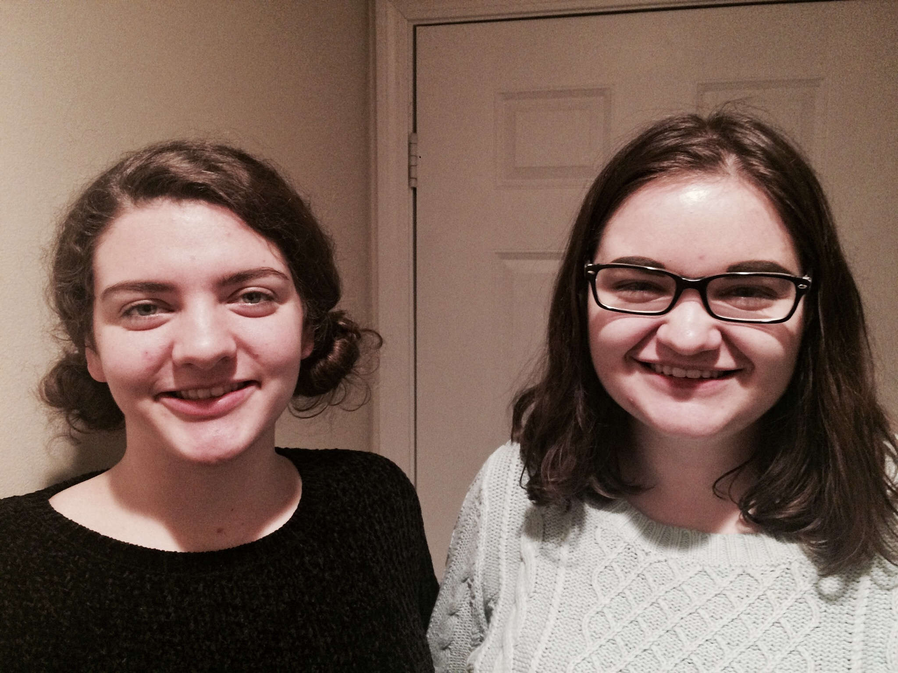
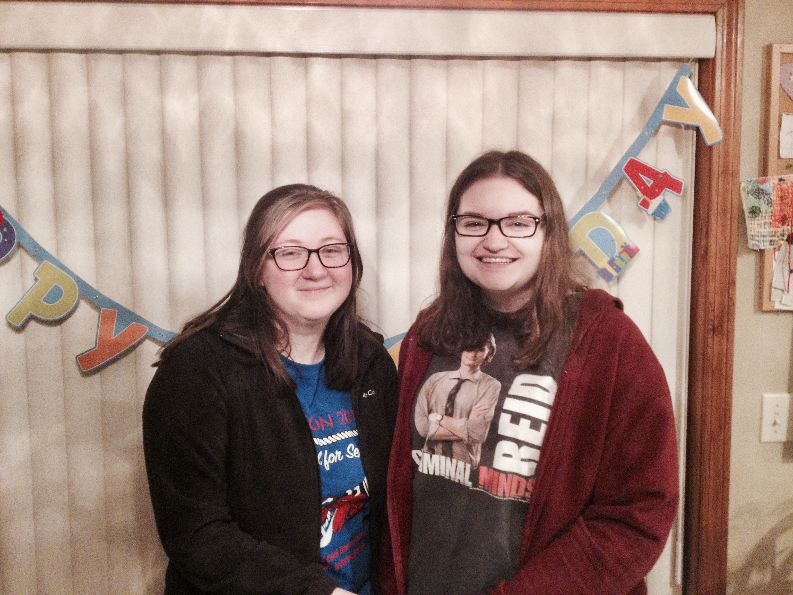
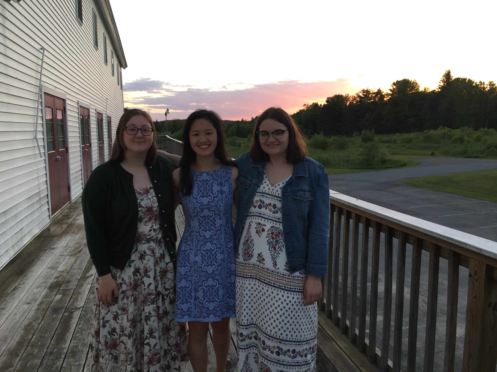

I met Amelia in seventh grade, but it wasn't until eighth grade that we became best friends. She is currently a first year student at Ball State University in Indiana. Amelia and I talk every single day and we never have nothing to talk about.
Rachel and I have been friends ever since middle school, but we became best friends sometime around freshman year of high school. She's currently studying art at St. Michael's College in Vermont. Rachel and I are extremely similar and I believe that's one of the many reasons why we get along so well.
Katie and I became friends in our junior year of high school. She had a few classes with Rachel, so once they became friends, Katie and I became friends. Now, Rachel, Katie, and I are a wonderful trio! Katie is currently studying molecular biology at the College of Wooster in Ohio. Katie is very smart and passionate about what she loves.
